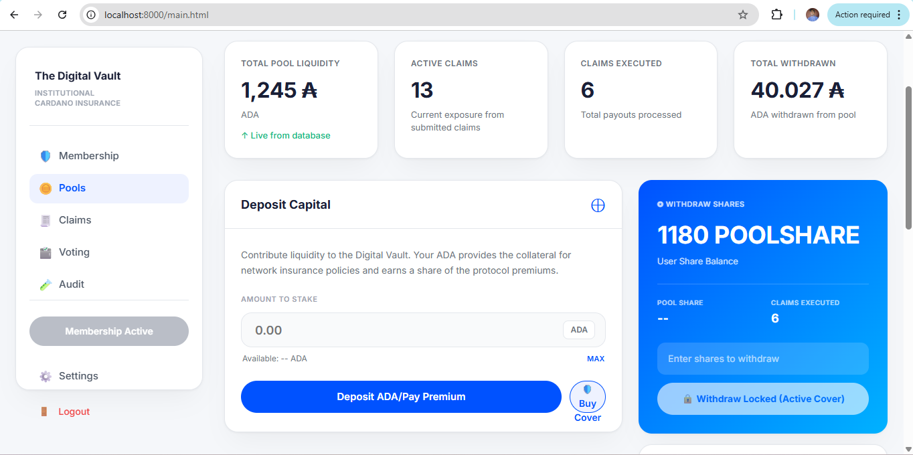

CoxyInsure User Help Documentation.
5. Capital Pools and Deposits
The Pools page is the liquidity side of the protocol. Here, users deposit ADA into the shared insurance pool, receive pool share representation, and monitor pool-level statistics such as liquidity, claims submitted, claims executed, and total withdrawn value.
5.1 Deposit ADA into the Pool
- Navigate to the Pools page.
- Enter the ADA amount you want to deposit.
- Use the MAX shortcut if you want to fill the input with the available amount shown.
- Click Deposit ADA.
- Approve the wallet transaction and wait for confirmation.
5.2 Pool Share Balance
After a successful deposit, the dApp updates the user’s share balance and pool share metrics. These values help the user understand how much of the pool they currently represent.
5.3 Withdrawals and Cover Locking
🪙 Important: If a user has an active purchased cover, the protocol may disable withdrawal so the user cannot remove supporting liquidity while still being protected.
- Withdraw only when the UI shows the action as available.
- If withdrawal is locked, check whether the wallet has an active cover.
- Use pool activity and history sections to confirm previous deposits or withdrawals.
